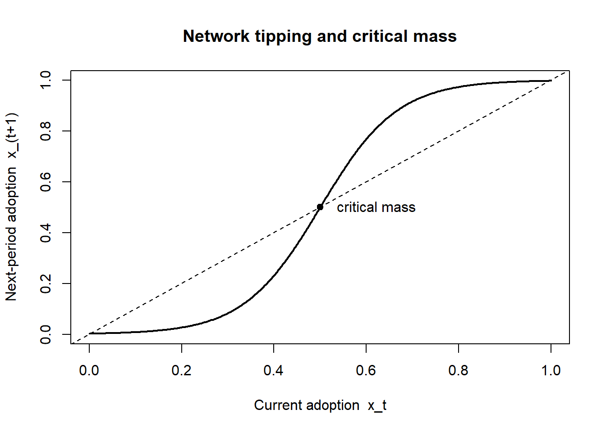

flowchart LR
A["Side A\n(e.g., riders, cardholders, users)"]
P["PLATFORM\nsets price structure\n(p_A, p_B)"]
B["Side B\n(e.g., drivers, merchants, advertisers)"]
A -- "cross-side effect (+)" --> B
B -- "cross-side effect (+)" --> A
P -. "p_A (often subsidized)" .-> A
P -. "p_B (money side)" .-> B
68 Platforms and Two-Sided Markets
A platform is an intermediary that creates value primarily by enabling direct interactions between two or more distinct groups of users. The defining feature is not that the firm sells a product but that it sells access: a credit-card network sells merchants access to cardholders and cardholders access to merchants; a ride-hailing app sells riders access to drivers and drivers access to riders; a videogame console sells gamers access to titles and developers access to an installed base. What makes platforms a distinct object of study—rather than ordinary resellers who buy and resell—is that the value each side derives depends on how many and which users join the other side. Demand is interdependent across groups, and that interdependence rewrites the firm’s pricing, product, and competitive problems.
This chapter treats the platform as two tightly coupled objects: an economic structure (a market with cross-group externalities that the platform internalizes through prices and governance) and a strategic asset (an installed base whose growth is self-reinforcing and whose tipping dynamics can hand a market to a single winner). A serious account must connect the two, because the central managerial decisions—what to charge each side, whom to subsidize, how to solve the chicken-and-egg launch problem, how to govern the interactions that occur on the platform—follow directly from the externality structure. The economics is due in large part to the two-sided-market theory of Rochet and Tirole, and to the platform-pricing analyses of Parker–Van Alstyne and of Armstrong, who worked out the price-structure logic (Rochet and Tirole 2003, 2006; Parker and Van Alstyne 2005; Armstrong 2006); the strategic machinery traces to the network-effects literature begun by Michael L. Katz and Shapiro (1985) and its companion analyses of standards and compatibility (Michael L. Katz and Shapiro 1986; Michael L. Katz and Shapiro 1994).
The chapter proceeds from the inside out. It begins with the raw force that distinguishes platforms—network effects and their cross-side cousins—and defines them formally. It then builds the pricing structure problem, derives the canonical Rochet–Tirole condition, and confronts what the structure implies for which side pays and which is subsidized. From there it treats the dynamic problems managers actually face: the chicken-and-egg launch problem, tipping and multihoming, governance of the interactions a platform hosts, and competition among platforms. It closes with measurement—how an analyst estimates network effects from data, what identification assumptions that requires, and what breaks them—and supplies reproducible code.
68.1 Network Effects and Cross-Side Externalities
The primitive is the network effect (or network externality): a good exhibits a network effect when a user’s utility from it increases in the number of other users. The telephone is the textbook case—a phone is useless if no one else owns one, and its value rises with every additional subscriber. Formally, let \(u_i\) denote user \(i\)’s utility and \(n\) the number of adopters. A pure (within-side, or same-side) network effect holds when \(\partial u_i / \partial n > 0\). The effect is direct when utility depends on the raw count of fellow users and indirect when it operates through a complementary product whose supply rises with the user base (more console owners induce more game titles, which in turn attract more console owners).
Platforms add a second, asymmetric channel. Let the two sides be \(A\) and \(B\) with participation \(n_A\) and \(n_B\). A cross-side network effect, or cross-group externality, holds when a user on side \(A\) benefits from participation on side \(B\):
\[ \frac{\partial u_A}{\partial n_B} > 0, \tag{68.1}\]
and symmetrically for side \(B\). Cross-side effects are the engine of the two-sided market: merchants value more cardholders, cardholders value more accepting merchants, and the platform sits between them internalizing both. Crucially, cross-side effects need not be symmetric in sign or magnitude. In media markets the effect can be negative in one direction—viewers dislike advertisers even as advertisers value viewers—so a television network or a search engine maximizes by restraining the ad side to protect the audience side (Rochet and Tirole 2006). Television is the case where this has been estimated rather than assumed: modeling viewing and advertising demand jointly, Wilbur (2008) finds viewers are roughly twice as ad-averse as advertisers are viewer-hungry, so the profit-maximizing network carries materially less advertising than a one-sided reading of the ad market would imply. Where exactly the boundary of a multi-sided platform lies is itself contested, and the distinction between a platform and a reseller who simply buys and re-sells turns on which side retains control rights rather than on the pattern of externalities (Hagiu and Wright 2015). Within-side effects can likewise be negative: more merchants on a marketplace intensifies competition among them, and more drivers on a ride app thins each driver’s earnings.
A landmark statement frames the construct:
A market is two-sided if the platform can affect the volume of transactions by charging more to one side of the market and reducing the price paid by the other side by an equal amount; in other words, the price structure matters, and platforms must design it so as to bring both sides on board.
— after Rochet and Tirole’s characterization of two-sided markets (Rochet and Tirole 2006)
The italicized claim—that the structure of prices, not merely their level, affects volume—is what separates a two-sided market from an ordinary one and is the source of nearly everything distinctive in platform strategy. We make it precise below.
It is worth distinguishing two phenomena that are often conflated. A network effect is a property of demand: it concerns how users’ valuations move with participation. A scale economy is a property of cost: it concerns how average cost moves with output. The two generate superficially similar “bigger is better” dynamics, but they are not the same and have different policy and competitive implications—a platform can enjoy strong demand-side network effects while running at roughly constant marginal cost, and a manufacturer can enjoy steep scale economies with no network effect at all. Conflating them leads analysts to attribute to network effects market structure that is really driven by fixed costs, and vice versa.1
68.2 Pricing Structure
The defining managerial decision in a two-sided market is not the level of price but its structure—how the total price is allocated across the two sides. Because a user on side \(A\) confers a benefit on side \(B\) (and conversely), the platform can profitably charge one side below its own marginal cost, even below zero, recouping the subsidy from the side that values access more. This is why so many platforms give one side away free: free consumer search funded by advertisers, free operating systems funded by application developers, free ride-app signup funded by per-trip commissions.
68.2.1 The Rochet–Tirole Condition
Consider a monopoly platform facing sides \(A\) and \(B\). Let \(p_A\) and \(p_B\) be the per-interaction prices, and suppose the volume of interactions \(V\) depends on the participation each price induces on each side, \(V = D_A(p_A)\,D_B(p_B)\) in a reduced form, with constant marginal cost \(c\) per interaction. The platform chooses \((p_A, p_B)\) to maximize profit
\[ \pi = (p_A + p_B - c)\,V(p_A, p_B). \tag{68.2}\]
The first-order conditions deliver a generalization of the Lerner rule in which the markup charged to each side is governed by that side’s demand elasticity. Writing \(\eta_A\) and \(\eta_B\) for the (own-price) elasticities of participation, the optimal structure satisfies
\[ \frac{p_A + p_B - c}{p_A} = \frac{1}{\eta_A}, \qquad \frac{p_A + p_B - c}{p_B} = \frac{1}{\eta_B}, \tag{68.3}\]
so that the ratio of prices across sides is inversely related to the ratio of elasticities (Rochet and Tirole 2003, 2006). The intuition is sharp and is the central takeaway of the entire pricing literature: the side that is more elastic—more reluctant to join, more price-sensitive, more easily lost to an outside option—pays less, and the side that values the interaction more inelastically pays more. The platform allocates the burden to the side that will tolerate it, because every user retained on the elastic side is worth more through the cross-side externality than the revenue forgone from subsidizing them.
Two forces refine this. First, the strength of the cross-side externality each side exerts pulls price the other way: a side that confers a large benefit on the other side should be subsidized to bring it on board, independent of its own elasticity (Armstrong 2006). A platform thus subsidizes the side that is either very price-sensitive or very valuable to the opposite side—often the same side (consumers are both fickle and the reason advertisers pay). Second, whether users single-home (join one platform) or multihome (join several) reshapes the markup: when one side multihomes and the other single-homes, the platform holds a competitive bottleneck over access to the single-homing side and extracts rents from the multihoming side, a result we return to under platform competition (Armstrong 2006).
68.2.2 What the Structure Implies
Three implications of Equation 68.3 organize how managers read platform pricing.
The first is below-cost and negative pricing as an equilibrium, not a promotion. When one side is highly elastic and confers a strong externality, the profit-maximizing \(p_A\) can be negative—the platform pays users to join (sign-up bonuses, free hardware sold below cost, cashback). This is not predatory pricing in the antitrust sense and not a temporary loss leader; it is the structure the externalities call for, and it persists in steady state. Misreading a subsidized side as evidence of below-cost predation is a recurring error in both managerial and regulatory analysis of platforms.
The second is that the identity of the subsidized side is an empirical question, not a convention. It depends on relative elasticities and externality strengths, both of which vary by market and over the life cycle. Newspapers historically subsidized readers and charged advertisers; some digital outlets have inverted this with reader paywalls as ad demand softened. The structure is not fixed by industry; it is chosen, and re-chosen as conditions move.
The third concerns price floors and the limits of the logic. The subsidy to one side is bounded by the threat that subsidized “users” are not genuine participants but arbitrageurs who consume the subsidy without conferring the externality—fake accounts harvesting sign-up bonuses, drivers who never complete trips. The platform’s ability to run an aggressive price structure is therefore inseparable from its ability to govern who is on the platform, which we take up in Section 68.6.
Table 68.1 summarizes how the structure resolves across canonical platforms.
| Platform type | Subsidized side | Money side | Why (elasticity / externality) |
|---|---|---|---|
| Payment card network | Cardholders (rewards) | Merchants (fees) | Cardholders elastic and confer large externality on merchants |
| Search engine / ad-funded media | Users (free) | Advertisers (auctions) | Users elastic; advertisers value access inelastically |
| Console videogames | Gamers (hardware sold near cost) | Developers (royalties) | Installed base drives developer willingness to pay |
| Ride-hailing | Riders (low fares early) | Drivers, then riders (commission) | Both sides elastic at launch; structure shifts with maturity |
| B2B marketplace | Buyers (free to browse) | Sellers (listing/transaction fees) | Sellers value buyer access; buyers easily lost |
Figure 68.1 gives the general anatomy: two sides linked by cross-side network effects, with the platform choosing how to split the total price across them.
68.2.3 Beyond Two Tiers: Ad Load and Fee as a Screening Menu
Equation 68.3 treats each side as facing a single price. Content platforms increasingly do not: Netflix, Spotify, and YouTube fund the same catalogue through some mix of subscription fees and advertising, and the mix is offered to viewers as a choice. That turns the price-structure problem into a mechanism design problem, and specifically into the screening problem of Chapter 20—a menu whose options must satisfy incentive compatibility because the platform cannot observe which viewer is which.
The two-dimensional type is what makes the setting distinctive. A viewer is characterized by how much the content is worth to them and by how much advertising annoys them, and those two are not the same trait. The instrument has two dimensions to match: an ad load and a fee. Gutt, Mehta, and Quinn (2026) formalize the general version—the generalized ad-supported subscription (GAS) mechanism, a menu offering a continuum of (ad intensity, fee) combinations, which nests today’s ad-only, subscription-only, and two-tier “free-with-ads versus paid-ad-free” models as special cases and is implementable as a slider or a short finite menu.
Their result is the one worth carrying into practice. GAS is revenue-optimal within this broad class, but the familiar two-tier menu is often nearly optimal. Calibrating to a video-on-demand setting with an incentive-compatible willingness-to-pay survey, they find GAS raises revenue by 148% over ad-only, 20% over subscription-only, and 1.8% over the two-tier menu. The first two numbers say the mix matters enormously; the third says the fine-grained menu mostly does not. They also show that advertising-intensity caps of the kind the EU Digital Services Act and Digital Fairness Act contemplate, and competitive pressure, both shrink coverage of low-value viewers and push platforms toward less ad-intensive offerings.
The simulation below builds the menu from scratch by incentive compatibility— viewers self-select, the platform never observes types—and grows it greedily one option at a time.
Code
set.seed(11)
N <- 4000
theta <- rlnorm(N, log(11), 0.55) # $/month value of the content to a viewer
gamma <- rlnorm(N, log(1.1), 0.70) # $ disutility per unit of ad load
A <- 8; adrev <- 1.25 # max ad load; platform ad revenue per unit
# Every (ad load, fee) pair the platform could put on a menu, and what one taker
# of that option is worth to the platform.
grid <- expand.grid(a = seq(0, A, by = 1), f = seq(0, 30, by = 1))
grid$yield <- grid$f + adrev * grid$a
# Consumers self-select: each takes the option maximizing theta - gamma*a - f,
# and abstains if the best option leaves negative surplus. This is the incentive-
# compatibility constraint doing its work -- the platform never sees (theta, gamma).
rev_of <- function(rows) {
S <- matrix(theta, N, length(rows)) - outer(gamma, grid$a[rows]) -
matrix(grid$f[rows], N, length(rows), byrow = TRUE)
k <- max.col(cbind(0, S), ties.method = "first"); t <- k > 1
c(rev = sum(grid$yield[rows][k[t] - 1]) / N, cover = mean(t))
}
# Greedily grow the menu one option at a time; the plateau is the whole point.
grow <- function(pool, steps = 4) {
chosen <- integer(0); out <- NULL
for (s in seq_len(steps)) {
cand <- setdiff(pool, chosen)
g <- vapply(cand, function(x) rev_of(c(chosen, x))["rev"], numeric(1))
chosen <- c(chosen, cand[which.max(g)]); out <- rbind(out, rev_of(chosen))
}
list(path = out, menu = grid[chosen, c("a", "f")])
}
all_opts <- seq_len(nrow(grid))
ad_only <- rev_of(which(grid$a == A & grid$f == 0))
sub_only <- {
paid <- which(grid$a == 0)
rev_of(paid[which.max(vapply(paid, function(g) rev_of(g)["rev"], numeric(1)))])
}
two_tier <- {
free <- which(grid$a == A & grid$f == 0); paid <- which(grid$a == 0)
b <- paid[which.max(vapply(paid, function(g) rev_of(c(free, g))["rev"], numeric(1)))]
rev_of(c(free, b))
}
gas <- grow(all_opts)
tab <- rbind(`ad-only` = ad_only, `subscription-only` = sub_only, `two-tier` = two_tier,
`GAS (2 options)` = gas$path[2, ], `GAS (3 options)` = gas$path[3, ],
`GAS (4 options)` = gas$path[4, ])
tab <- cbind(tab, `gain over two-tier %` = 100 * (tab[, "rev"] / two_tier["rev"] - 1))
round(tab, 3)
#> rev cover gain over two-tier %
#> ad-only 5.968 0.597 -18.804
#> subscription-only 5.895 0.655 -19.790
#> two-tier 7.350 0.767 0.000
#> GAS (2 options) 7.419 0.700 0.946
#> GAS (3 options) 7.419 0.700 0.946
#> GAS (4 options) 7.419 0.700 0.946The ordering reproduces theirs. Moving from either single-instrument mechanism to a two-option menu is worth roughly twenty percent; moving from the two-option menu to a richer one is worth about one percent, and the greedy path flattens immediately—the third and fourth options add nothing, because two options already separate the types that are separable. The reason the two-tier menu does so well is that the incentive-compatibility constraints bind in one direction only: a viewer who tolerates ads must not be tempted by the ad-free tier, and one cheap option plus one clean option is nearly enough to arrange that.
Regulation acts on the menu by deleting its high-ad options, which is a different intervention from capping the price.
Code
# A regulatory cap on advertising intensity (the EU Digital Services Act
# direction of travel) removes the high-ad options from the menu entirely.
capped <- grow(which(grid$a <= 3))
rbind(uncapped = gas$path[2, ], `ad load capped at 3` = capped$path[2, ])
#> rev cover
#> uncapped 7.419000 0.70025
#> ad load capped at 3 6.448125 0.68975
cat("\nOptimal menu, uncapped (ad load, fee):\n"); print(gas$menu[1:2, ])
#>
#> Optimal menu, uncapped (ad load, fee):
#> a f
#> 18 8 1
#> 91 0 10
cat("\nOptimal menu, capped (ad load, fee):\n"); print(capped$menu[1:2, ])
#>
#> Optimal menu, capped (ad load, fee):
#> a f
#> 82 0 9
#> 58 3 6The cap costs revenue, as intended, but it also trims coverage: the option that served the most ad-tolerant, lowest-willingness-to-pay viewers is the one removed, and the replacement asks them for cash they were self-selecting away from. That is the distributional footnote to any advertising cap, and it is invisible in an analysis that looks only at the average ad load. ### Release Scheduling as a Complement to the Menu {#sec-platform-release}
The GAS menu governs the terms on which content is consumed. A content platform also chooses the schedule, and that decision turns out to be a distinct lever on the same catalogue. Zhao, Mehta, and Shi (2026) study a digital platform for serialized content—books released chapter by chapter—and ask whether the platform should drop all chapters at once or meter them out.
The two obvious answers each capture half of the mechanism. Simultaneous release enables binge consumption, which is what hooks a reader on a title. Sequential release forces return visits, and a return visit is the occasion on which a reader discovers some other title in the catalogue. Framed that way, bingeing and exploration look like substitutes: every hour spent finishing one book is an hour not spent browsing.
The paper’s result is that a hybrid schedule makes them complements. Revenue is maximized when roughly the first half of a book’s chapters are released simultaneously and the remainder sequentially. The simultaneous block does the hooking; the sequential tail converts that attachment into repeated visits, and the visits do the exploring. The managerial reading is that release policy is a portfolio instrument rather than a title-level one—the schedule for any single book is being chosen for what it does to consumption of the rest of the catalogue, which is why a title-by-title optimization gets it wrong. It is the same logic that makes the price structure of Equation 68.3 a structure rather than a set of independent prices.
68.3 The Chicken-and-Egg Problem
Cross-side externalities that drive a mature platform’s profits are a curse at launch. No user on side \(A\) wants to join until side \(B\) is present, and no user on side \(B\) wants to join until side \(A\) is present: each side’s participation is a best response to the other’s, and the empty market—where neither side joins—is always an equilibrium. This is the chicken-and-egg problem (also the penguin problem, after penguins who will not be first into the water), and it is the central obstacle to platform entry.
Formally, write expected utility for a representative side-\(A\) user as \(u_A(n_B^e)\), increasing in the expected side-\(B\) participation \(n_B^e\), and symmetrically for side \(B\). An adoption equilibrium is a fixed point \((n_A^*, n_B^*)\) at which each side’s participation is consistent with the other’s. Because the best-response curves both slope upward, the system generically admits multiple equilibria, including the no-adoption point \((0,0)\). Coordinating users away from the empty equilibrium toward a high-participation one is the launch problem; expectations are self-fulfilling, so the platform must manufacture the belief that the other side will show up.
The strategies platforms use to escape the bad equilibrium map cleanly onto this structure:
- Subsidize one side hard at launch, even at a loss, to seed participation that makes joining a best response for the other side. This is the dynamic counterpart to the static pricing structure: early subsidies are an investment in expectations.
- Solve one side’s problem in a single-sided mode first, then open the second side—the “come for the tool, stay for the network” pattern. A product that is standalone-useful to side \(A\) bootstraps an installed base before any side-\(B\) participation is required, breaking the simultaneity.
- Micromarket / zip-code launch: ignite the network in one narrow geography or vertical where the critical mass needed for a viable interaction is small, then replicate. Density, not aggregate scale, is what makes a local marketplace tip, so a platform that achieves liquidity in one city before expanding faces a far smaller coordination problem than one launching everywhere thinly.
- Seed the marquee side: recruit a small number of high-value side-\(B\) participants (anchor merchants, marquee game titles, celebrity sellers) whose presence credibly signals that the other side will follow.
The unifying logic is that all four reduce the expected participation gap that any joining user must bridge—either by directly buying participation, by removing the cross-side dependence at launch, or by shrinking the critical mass needed for the first viable interactions.
68.4 Designing the First Interaction: Fulfillment on a Co-Creation Platform
The launch tactics above buy participation with money, scope, or geography. A cheaper lever sits inside the first session itself: what the visitor is allowed to see before being asked to commit. This margin has become sharp on generative-AI content-generation platforms, where a visitor types a prompt and the platform returns a poster, a portrait, a song. The technology’s headline virtue is immediacy—but immediacy is also what the platform gives away for free, and a visitor who has already received the thing has no reason to register for it.
Jiang et al. (2026) name the design variable fulfillment: how much of the co-created output is revealed before the registration wall. Their theory, built on the value-co-creation tradition (Vargo and Lusch 2004), is that fulfillment moves two motivational states in opposite directions. Value-in-use is the visitor’s recognition that their own input shaped the output—it rises with fulfillment, because you cannot see your fingerprints on something you have not seen. Curiosity is anticipatory motivation, and by the information-gap account (Loewenstein 1994) it exists only while the experience remains perceptually open; a full reveal closes the gap and extinguishes it. Since registration needs both, the optimum is interior: partial fulfillment, which reveals enough to prove the visitor’s contribution mattered while withholding enough to leave something worth coming back for.
A randomized field experiment on a live platform, with a follow-up online study, bears this out: partial fulfillment beats both full and no fulfillment on registration. The design also crosses fulfillment with how the registration prompt is framed, and finds a substitution: loss framing—emphasizing what the visitor forfeits by not registering—lifts registration on average, but the lift attenuates under full fulfillment, because a visitor holding the finished artifact has little left to lose. Formal mediation shows why the interior optimum wins. Both partial and full fulfillment raise value-in-use, so that pathway alone would prescribe showing everything; only partial fulfillment sustains curiosity, and it is the joint activation of the two that carries the effect. The advantage persists past the registration event into subsequent engagement and return visits, and it appears only when the visitor genuinely co-produced the output—fulfillment is not a generic teaser mechanic but a lever on co-creation, which is why it grows with output quality rather than substituting for it.
flowchart LR
N["No reveal\n(nothing shown)"]
P["Partial reveal\n(some output shown)"]
F["Full reveal\n(all output shown)"]
V["Value-in-use:\n'my input shaped this'"]
C["Curiosity:\nexperience stays open"]
R["Registration,\nthen return visits"]
N -- "low" --> V
P -- "high" --> V
F -- "highest" --> V
N -- "moderate" --> C
P -- "highest" --> C
F -- "extinguished" --> C
V --> R
C --> R
The replication reconstructs the experiment: a three-by-two randomization of fulfillment against message framing, two latent pathways with the curvature the theory predicts, a binary registration outcome, and a post-registration return count. It recovers the arm ranking, tests the framing substitution, and decomposes the partial-versus-full gap into its two pathways with a bootstrap.
Code
set.seed(1200)
n <- 9000
# --- 3 x 2 randomization: how much of the co-created output is revealed
# before registration, crossed with how the registration prompt is framed.
fulf <- factor(sample(c("none", "partial", "full"), n, TRUE),
levels = c("none", "partial", "full"))
frame <- factor(sample(c("gain", "loss"), n, TRUE), levels = c("gain", "loss"))
# --- Two motivational pathways, moving in opposite directions ----------------
# Value-in-use rises with what you can see: proof your prompt shaped the output.
mu_viu <- c(none = 0.15, partial = 0.70, full = 0.85)[as.character(fulf)]
# Curiosity needs the experience to stay perceptually open: a full reveal closes it.
mu_cur <- c(none = 0.45, partial = 0.75, full = 0.20)[as.character(fulf)]
viu <- mu_viu + rnorm(n, 0, 0.35)
cur <- mu_cur + rnorm(n, 0, 0.35)
# --- Registration ------------------------------------------------------------
b_viu <- 1.30; b_cur <- 1.10
loss <- as.integer(frame == "loss")
full <- as.integer(fulf == "full")
eta <- -1.20 + b_viu * viu + b_cur * cur +
0.35 * loss - 0.30 * loss * full # loss framing substitutes for a full reveal
reg <- rbinom(n, 1, plogis(eta))
# Post-registration return behavior, driven by the same experiential state.
returns <- rpois(n, exp(-0.3 + 0.9 * viu + 0.6 * cur)) * reg
d <- data.frame(fulf, frame, viu, cur, reg, returns)
# --- (1) Registration by arm -------------------------------------------------
tab <- round(100 * tapply(d$reg, list(d$fulf, d$frame), mean), 1)
# --- (2) Main effect of fulfillment, and the framing interaction -------------
m_main <- lm(reg ~ fulf, data = d)
m_int <- lm(reg ~ fulf * frame, data = d)
# --- (3) Parallel-mediator decomposition of partial vs. full -----------------
paths <- function(dd) {
b <- coef(lm(reg ~ viu + cur + fulf, data = dd))
ap <- with(dd, c(mean(viu[fulf == "partial"]) - mean(viu[fulf == "full"]),
mean(cur[fulf == "partial"]) - mean(cur[fulf == "full"])))
c(viu = unname(ap[1] * b["viu"]), curiosity = unname(ap[2] * b["cur"]))
}
bt <- replicate(400, paths(d[sample.int(n, n, TRUE), ]))
ci <- apply(bt, 1, quantile, c(0.025, 0.975))
cat("Registration rate (%) by fulfillment x framing\n"); print(tab); cat("\n")
#> Registration rate (%) by fulfillment x framing
#> gain loss
#> none 40.3 46.4
#> partial 61.4 69.8
#> full 54.0 54.3
cat(sprintf("Partial vs. none : %+.1f pp\n", 100 * coef(m_main)["fulfpartial"]))
#> Partial vs. none : +22.2 pp
cat(sprintf("Full vs. none : %+.1f pp\n", 100 * coef(m_main)["fulffull"]))
#> Full vs. none : +10.8 pp
cat(sprintf("Partial vs. full : %+.1f pp\n\n",
100 * (coef(m_main)["fulfpartial"] - coef(m_main)["fulffull"])))
#> Partial vs. full : +11.4 pp
cat(sprintf("Loss-framing lift -- no reveal : %+.1f pp\n",
100 * coef(m_int)["frameloss"]))
#> Loss-framing lift -- no reveal : +6.0 pp
cat(sprintf("Loss-framing lift -- partial reveal : %+.1f pp\n",
100 * (coef(m_int)["frameloss"] + coef(m_int)["fulfpartial:frameloss"])))
#> Loss-framing lift -- partial reveal : +8.4 pp
cat(sprintf("Loss-framing lift -- full reveal : %+.1f pp (substitution)\n",
100 * (coef(m_int)["frameloss"] + coef(m_int)["fulffull:frameloss"])))
#> Loss-framing lift -- full reveal : +0.2 pp (substitution)
cat("\nWhy partial beats full -- decomposition of the partial-vs-full gap:\n")
#>
#> Why partial beats full -- decomposition of the partial-vs-full gap:
cat(sprintf(" via value-in-use : %+.1f pp [%+.1f, %+.1f]\n",
100 * mean(bt["viu", ]), 100 * ci[1, "viu"], 100 * ci[2, "viu"]))
#> via value-in-use : -4.2 pp [-4.7, -3.6]
cat(sprintf(" via curiosity : %+.1f pp [%+.1f, %+.1f]\n",
100 * mean(bt["curiosity", ]), 100 * ci[1, "curiosity"], 100 * ci[2, "curiosity"]))
#> via curiosity : +13.4 pp [+11.7, +15.2]
cat(sprintf("\nReturn visits per 100 arrivals: none %.0f, partial %.0f, full %.0f\n",
100 * mean(d$returns[d$fulf == "none"]),
100 * mean(d$returns[d$fulf == "partial"]),
100 * mean(d$returns[d$fulf == "full"])))
#>
#> Return visits per 100 arrivals: none 57, partial 166, full 115The decomposition is the part worth dwelling on. Judged on value-in-use alone, the partial arm is behind—it shows less, so visitors are less certain their prompt mattered—and a platform that optimized that single mediator would reveal everything. The curiosity pathway more than repays the deficit, and it does so only in the interior arm. This is the general hazard of single-mediator reasoning about experience design: when two pathways respond to the same lever with opposite curvature, the sign of the total effect is not recoverable from either one, and a mediation analysis that instruments only the pathway the designer finds intuitive will prescribe a corner solution.
Two boundaries deserve emphasis before the tactic is generalized. The effect is a property of co-creation, not of withholding: it appears when the visitor’s own input shaped the output and strengthens with output quality, so a platform that throttles a mediocre generator is not running this experiment—it is degrading the product. And the framing interaction is a warning about stacking persuasion levers. A loss-framed prompt and a full reveal are partial substitutes, so a team that A/B-tests copy and reveal policy independently will double-count their gains and be surprised when the combined launch underperforms the sum of its tests. The general point recurs in Section 68.6: platform design levers interact, and the interaction is usually substitution rather than complementarity.
68.5 Tipping, Critical Mass, and Multihoming
Network effects make platform markets prone to tipping: once one platform’s installed base pulls ahead, the cross-side externalities make it ever more attractive, the lead widens, and the market collapses toward a single dominant platform or a narrow oligopoly. The qualitative dynamic is a positive-feedback loop, and the quantitative threshold above which it ignites is the platform’s critical mass—the participation level beyond which growth becomes self-sustaining without further subsidy.
A minimal model makes the threshold visible. Suppose the fraction of a market that adopts in the next period, \(x_{t+1}\), responds to current adoption \(x_t\) through an S-shaped (logistic) best-response map driven by network value,
\[ x_{t+1} = \frac{1}{1 + e^{-\beta\,(x_t - \theta)}}, \tag{68.4}\]
where \(\beta\) scales the strength of the network effect and \(\theta\) is an adoption cost or threshold parameter. The map has up to three fixed points: a low (often zero) equilibrium, an unstable interior fixed point that is exactly the critical mass, and a high equilibrium near full adoption. Starting below critical mass, the system decays to the empty market; starting above it, the system tips to dominance. The managerial content of the chicken-and-egg subsidy is precisely to push initial adoption past the unstable interior point.
Whether a market actually tips, however, depends on three moderators that practitioners frequently overlook:
Multihoming. If users cheaply join several platforms at once, no single platform monopolizes access to them, the winner-take-all force weakens, and the market sustains multiple platforms in equilibrium (Armstrong 2006). Tipping requires that at least one side predominantly single-homes. Drivers and riders who run several apps simultaneously are the reason ride-hailing has not tipped to a single platform in most cities, despite strong cross-side effects.
Differentiation and heterogeneous needs. When users have heterogeneous tastes and platforms differentiate, distinct platforms can serve distinct segments and coexist—niche professional networks alongside a general one—because the network benefit of the dominant platform does not dominate the fit benefit of the specialized one for every user.
Capacity and congestion (negative same-side effects). When more participation degrades the experience—congestion, thinner matches, intra-side competition—the positive feedback is damped and full tipping is resisted.
The practical upshot is that “network effects imply winner-take-all” is a half-truth. Network effects create a tendency to tip; multihoming, differentiation, and congestion determine whether the tendency is realized. An analyst who observes a fragmented platform market should look first to these moderators rather than conclude the network effects are weak.
68.6 Platform Governance
Because a platform’s value is the interactions it hosts rather than a product it makes, the platform’s central operational task is governance: the rules, prices, information, and enforcement that determine who may participate, what interactions are permitted, and how disputes and quality are managed. Governance is to a platform what manufacturing is to a product firm—the locus where value is actually produced or destroyed—and it is the lever that makes an aggressive price structure (Chapter 68) sustainable by ensuring subsidized participants are genuine.
Six governance problems recur.
Quality and adverse selection. Open access invites low-quality participants whose presence imposes a negative cross-side externality (counterfeit sellers, bad drivers, spam advertisers). The platform’s classic remedy is a reputation system—ratings and reviews that aggregate private experience into a public signal, mitigating the lemons problem that would otherwise unravel the market (Akerlof 1970). Reputation systems are themselves a designed object: how reviews are solicited, displayed, and responded to changes the information they convey. Hotels that begin responding to reviews gain in average rating but receive fewer, longer negative reviews thereafter, as dissatisfied users self-censor unjustified complaints under anticipated scrutiny (Proserpio and Zervas 2017)—a reminder that governance interventions change participant behavior, not merely measure it. The design question is old enough to have its own literature: the earliest systematic treatment of online feedback mechanisms already framed reputation as an engineered institution with identifiable failure modes rather than a naturally occurring signal (Dellarocas 2003).
Matching technology and where its costs land. The platform’s search and filtering machinery is a governance instrument, not a neutral convenience: it decides which counterparties a participant ever sees, and therefore which interactions are possible at all. Its usual justification is efficiency—cheaper matching for the side doing the searching—and the usual evaluation stops at that stage. Barach (2026) ran the evaluation past it. In a randomized field experiment on a large online labor market, employers given candidate filters interviewed 3.4 percent fewer applicants, which is the intended saving. But filters work by sorting on commonly preferred, easily observable attributes, so every employer using them converges on the same shortlist. Using a machine-learning proxy for quality unobservable to the employer, the interviewed pool thinned at both ends—28.9 percent fewer low-quality applicants and 36.9 percent fewer high-quality ones—and among employers who actually used the filters, offers were 8.9 percent more likely to be rejected and contracted wages 2.5 percent higher. The screening cost the tool removed reappeared as bargaining power on the other side of the market.
Two implications matter for platform design. First, a matching feature has a cross-side externality of its own: concentrating demand on a visible subset of supply raises that subset’s outside options and depresses the discoverability of everyone else, which is a governance choice about who gets liquidity, not a retrieval optimization. Second, an efficiency metric measured at one stage of a multi-stage transaction is not a welfare metric for the transaction. The same caution applies to any ranking, recommendation, or filter that a marketplace ships as a search improvement—the question is always whether the saved cost was eliminated or relocated (Chapter 69).
Which objective the ranking serves. Barach (2026) show that a matching tool can relocate cost rather than remove it. Greminger (2026) asks the prior question the platform has to answer before it ships any ranking at all: what is the ranking maximizing? A marketplace can rank to maximize its own take (commissions or markups), the number of transactions, or consumer welfare, and these need not agree. The descriptive half of the paper shows that lower-priced and higher-utility alternatives gain disproportionate demand from being ranked higher—which implies that promoting them raises transactions and consumer surplus while plausibly lowering commission revenue, since commissions scale with price. That is the trade-off in its intuitive form, and it is the reason regulators treat ranking as a competition-policy object.
The paper’s contribution is to price the trade-off rather than assert it. It estimates a structural demand model in which consumers search and discover products—so a product’s rank changes whether it is seen, not merely how attractive it looks—and then constructs the optimal ranking under each objective separately. The result is a negative one, and more useful for it: all three objective-specific rankings improve on both a neutral benchmark and the platform’s status quo along all three metrics at once, and the differences among them are small. The binding constraint is not that revenue and welfare pull apart; it is that the status quo is leaving value on the table for everyone.
The simulation below reproduces the structure of that argument: position governs discovery, three objectives imply three different orderings, and the three orderings nonetheless land close together and well above the incumbent.
Code
set.seed(2026)
J <- 12; N <- 6000; commission <- 0.15
p <- round(runif(J, 40, 95)) # prices: moderate dispersion
q <- rnorm(J, 0, 2.0) # match quality: wider dispersion
alpha <- rlnorm(N, log(0.035), 0.55) # heterogeneous price sensitivity
V <- matrix(q, N, J, byrow = TRUE) - outer(alpha, p)
# Common random numbers: fix the taste shocks and the discovery draws once, so
# that comparing two rankings compares the rankings and not the noise.
gum <- function(n, m) -log(-log(matrix(runif(n * m), n, m)))
E <- gum(N, J); E0 <- 1.0 + gum(N, 1); U <- matrix(runif(N * J), N, J)
# Position governs DISCOVERY: rank r is examined with probability 0.85^(r-1).
# Rank changes what a consumer sees, not what it is worth once seen.
outcomes <- function(ord) {
rk <- integer(J); rk[ord] <- seq_len(J)
u <- V + E; u[U >= rep(0.85^(rk - 1), each = N)] <- -Inf
k <- max.col(cbind(E0, u), ties.method = "first") # column 1 = no purchase
b <- k > 1; j <- k[b] - 1
c(revenue = commission * sum(p[j]) / N,
transactions = mean(b),
welfare = sum(u[cbind(which(b), j)]) / N)
}
# Build each objective's ranking greedily, slot by slot: fill position 1 with
# whichever product maximizes the objective there, then position 2, and so on.
greedy <- function(obj) {
rem <- seq_len(J); ord <- integer(0)
for (s in seq_len(J)) {
sc <- vapply(rem, function(x) outcomes(c(ord, x, rem[rem != x]))[obj], numeric(1))
pick <- rem[which.max(sc)]
ord <- c(ord, pick); rem <- rem[rem != pick]
}
ord
}
legacy <- q + rnorm(J, 0, 2.5) # status quo: a stale relevance score
rankings <- list(
`max revenue` = greedy("revenue"),
`max transactions` = greedy("transactions"),
`max welfare` = greedy("welfare"),
`neutral (random)` = sample(J),
`status quo` = order(legacy, decreasing = TRUE))
round(t(sapply(rankings, outcomes)), 3)
#> revenue transactions welfare
#> max revenue 3.906 0.426 1.046
#> max transactions 3.893 0.428 1.050
#> max welfare 3.890 0.428 1.054
#> neutral (random) 1.823 0.205 0.418
#> status quo 3.065 0.326 0.761Read the table by column. Each objective-specific ranking does best, or ties, on its own column—but every one of them dominates both the neutral benchmark and the status quo on all three columns at once, and the spread across the top three rows is tiny next to the gap between them and the bottom two. A platform arguing that it cannot promote cheaper or better-matched listings without sacrificing revenue is, on this evidence, describing a constraint it has not tested.
Two caveats keep the exercise honest. The first is that the result is calibration- dependent in an interpretable way: here match quality is more dispersed than price, so the products that convert best are not systematically the cheapest, and the objectives largely agree about which products belong at the top. Widen the price distribution relative to the quality distribution and a genuine revenue-versus- welfare tension reappears. The paper’s contribution is that in its data the first regime is the one that obtains—which is an empirical finding, not a theorem. The second is the caution from Barach (2026): these are equilibrium-free counterfactuals in which sellers do not reprice in response to the new ranking, which is exactly the margin on which the relocated-cost story operated.
Who actually sets the rules. Everything above treats governance as something the platform does to its participants. Huber et al. (2026) document the return channel. Tracing fifteen years of Apple’s iOS ecosystem (2009–2024), they show how large complementors—Spotify, Epic Games—forced changes to rules including the commission structure and the anti-steering provisions, not through market channels, which were closed to them, but through nonmarket ones: public advocacy, litigation, and coalition-building.
They identify three mechanisms by which these “complementor giants” orchestrate change. They create public occasions for other stakeholders to voice grievances; they generate confluence across grievances that were separately too small to matter; and they render the underlying tension salient enough that regulators, media, users, other developers, and eventually the platform owner itself respond in ways that legitimize the challenge. The pressure is cumulative rather than episodic, which is why a fifteen-year window is the right unit of observation and a single dispute is not.
Two things follow. For a complementor in a concentrated platform market, bargaining power is built outside the market before it can be exercised inside it—a strategic capability that looks nothing like the pricing and product levers this chapter has otherwise been about. For a regulator, the finding points away from prescribing platform-owner conduct directly and toward strengthening the conditions under which complementors can advocate for themselves, which is a much lighter-touch instrument than rule-writing and does not require the regulator to know the efficient rule in advance.
The platform’s own role as competitor. A platform that both hosts third-party sellers and sells its own products faces a conflict: data on third-party demand can be used to enter their niches, and ranking algorithms can be tilted toward house products. This self-preferencing problem trades short-run platform profit against long-run participation incentives, because sellers who fear expropriation invest less or exit. The empirical record on Amazon shows the platform entering exactly the product spaces where third-party sellers had demonstrated demand, which is the sharpest available evidence that the conflict is real rather than hypothetical (Zhu and Liu 2018); the theoretical counterpart shows when a search-neutrality rule raises or lowers welfare once the platform internalizes both roles (Zou and Zhou 2025).
Openness versus control. A platform chooses how open to be—how freely third parties may build on it, transact, and access its users. More openness recruits more complementors and accelerates indirect network effects; more control protects quality, captures more value, and guards the core experience. The choice is not binary but a governance gradient, and the optimal point shifts over the life cycle: openness to bootstrap the network early, selective control to monetize and protect quality once the network is established. (Boudreau 2010)
Provenance of contributions. Generative AI adds a governance problem the reputation machinery was never designed for: a contribution can now be cheap, fluent, plausible, and not the contributor’s own knowledge, which corrodes the signal that a knowledge platform exists to aggregate. Stack Overflow’s December 2022 prohibition on ChatGPT-generated questions and answers is the natural experiment, and Borwankar et al. (2026) read it with a difference-in-differences design against the AskProgramming subreddit as a control. The results split cleanly along the openness–control gradient. On the quality side, answers after the restriction became longer, more linguistically complex, and more positive in tone, and they drew more upvotes—the community judged them better. On the volume side, both questions and answers posted fell, and first-time contributors declined; questions themselves were unaffected, which localizes the effect to the answering side where the policy bit. A ban on synthetic contributions, in other words, bought quality with participation, exactly the trade the governance gradient predicts.
Two features make the evidence unusually credible for a platform-policy study. The first is replication under an independent shock: Italy’s temporary nationwide ChatGPT ban removes the tool without any platform rule changing, and reproduces the pattern, which rules out explanations resting on Stack Overflow’s announcement rather than on AI availability. The second is a mechanism test—a scenario-based experiment with 440 participants—yielding direct evidence of compensatory knowledge signaling: barred from the tool, contributors invest in demonstrating human expertise. That mechanism is what a purely aggregate DiD cannot deliver, and it matters managerially, because a rule that works by changing what contributors want to signal will not survive a change in what the audience finds impressive.
Policy as stance signal. The Stack Overflow case treats a rule as a constraint on contributions, but a rule is also an announcement, and the announcement can move participation on its own. Huang, Fu, and Ghose (2026) isolate that channel with two natural experiments of opposite sign on leading Chinese visual-arts platforms. Lofter launched its own AI image generator—a pro-AI stance—and creator activity fell. Graffiti Kingdom prohibited AI-generated artwork—an anti-AI stance—and creator activity rose. Neither movement is what a tool-features story predicts: adding a free generator lowers the cost of producing on Lofter, and banning a technique removes an option on Graffiti Kingdom. What the two experiments share is the stance the policy communicated—about AI’s role on the platform, about the platform’s commitment to human creators, and about the competitive environment those creators expect to face—and multiple lines of evidence in the paper point to that signal rather than to the mechanics of the tool or the enforcement.
The heterogeneity connects the result back to the price-structure and tipping logic of this chapter. Reductions on Lofter were largest among higher-popularity, multi-homing, and AI-averse creators: the creators with the most to lose from synthetic substitutes, and—crucially—the ones already holding an outside option, since multihoming (Chapter 68) is what converts a discouraging signal into an exit rather than a grumble. Analysis of creator posts names the concerns doing the work: replacement risk, perceived low quality, and copyright infringement. For a platform whose subsidized side is the human creator base, this makes a generative-AI product decision inseparable from a governance decision. The feature is priced by the side that must interpret it, and a launch communicated as augmenting creators is a different governance act from the same launch communicated as substituting for them.
68.7 Platform Competition
When platforms compete, the network-effects logic interacts with the pricing-structure logic to produce dynamics with no single-sided analogue. Three results organize the field.
Competitive bottlenecks. When one side single-homes and the other multihomes, each platform is a monopoly gatekeeper over its single-homing users, because reaching them requires joining that platform. Competing platforms then compete fiercely for the single-homing side (often subsidizing it heavily) and extract rents from the multihoming side, which has no choice but to join all platforms to reach all of the single-homing users (Armstrong 2006). This explains why advertisers (who multihome across media) pay, while audiences (who often single-home their attention) are courted.
Envelopment. A platform in an adjacent market can attack an incumbent by bundling an overlapping functionality into its own user base, leveraging shared users to enter without solving the chicken-and-egg problem from scratch. Platform competition is therefore frequently cross-market rather than within a narrowly defined product market—a messaging app entering payments, a search engine entering maps—and an incumbent’s most dangerous rival is often a large platform from a neighboring market rather than a direct entrant. (Eisenmann, Parker, and Van Alstyne 2011)
Compatibility and standards. Competing platforms choose whether to be compatible—to let their networks interconnect (as banks share an ATM network) or remain proprietary. Compatibility converts a fragmented set of small networks into one large network, eliminating the network-effect basis for competition and shifting rivalry to price and features; incompatibility preserves the prize of tipping but risks splitting the market. The strategic choice of compatibility is thus a choice about whether to compete on network size at all, and the firm with the larger installed base typically prefers incompatibility (to press its advantage) while the smaller prefers compatibility (to neutralize it)—the classic asymmetry of standards wars (Michael L. Katz and Shapiro 1985; Michael L. Katz and Shapiro 1986).
68.7.1 Market Structure and the Realized Externality
The three results above concern how competition splits rents. A fourth question, less studied and often more consequential for policy, is how competition changes the size of the thing the platform does to the world outside it. Platforms are routinely justified by their externalities—ride-hailing reduces drunk driving, home-sharing spreads tourist spending, bike sharing displaces short car trips—but those externalities are produced by usage, not by the existence of an app. Between service availability and realized externality sits adoption, and adoption depends on supply.
Liu et al. (2026) put that chain to a test with the staggered rollout of the two largest dockless bike-sharing platforms, Ofo and Mobike, across Chinese cities, using a stacked difference-in-differences design with air quality as the outcome. The twin-platform setting buys two analyses from one rollout. Treating the two firms as a single provider, entry improves urban air quality by 3.82%, a 3.13-point reduction in the Air Quality Index. Distinguishing market structure changes the picture: dual-platform entry reduces AQI by 6.47 points—more than twice the pooled estimate—while single-platform entry has no statistically significant effect at all. The heterogeneity analysis lines up with the demand-side story: improvements are larger in cities with more domestic migrants, larger well-educated populations, denser public transit, and better bike-lane infrastructure, and smaller where the terrain is steep or rainfall frequent.
The mechanism is supply-side and cuts against the reflex that rivalry dissipates a platform’s value. Dockless fleets are capacity-constrained: the binding constraint on a short trip is whether a usable bike is within a short walk of the origin. A second platform does not split a fixed network the way a second social network splits an audience; it adds bikes, densifies coverage, and lowers the expected walk, pushing adoption past the level at which mode substitution actually happens. Multihoming is nearly free (two apps, no switching cost, no content to migrate), so the two networks are substitutes in the user’s choice but complements in the city’s realized service level. The general condition is worth stating because it travels: when a platform’s externality depends on density of physical availability, and users multihome at near-zero cost, competition can be complementary at the level of the outcome society cares about even while it is rivalrous at the level of firm profit.
The design deserves as much attention as the finding. A pooled treatment indicator would have reported a modest average effect and missed that the entire effect lives in dual-entry cities. The chapter’s earlier warning about network-effect estimation has a counterpart here: an average treatment effect estimated across heterogeneous market structures is not the effect of the treatment in any market. The template generalizes to marketing settings with two rivals entering markets at different times—delivery apps, streaming services, retail-media networks—wherever a researcher can code not only when entry happened but how many platforms were present afterward.
Stacking is what makes the estimation honest under staggered timing. Rather than a single two-way fixed-effects regression—which, with staggered adoption and heterogeneous effects, uses already-treated units as controls and can return a weighted average with negative weights—the analyst builds one clean sub-experiment per entry event, each with its own treated cohort and not-yet-treated controls, then stacks them and estimates with event-by-cohort fixed effects (Cengiz et al. 2019; Callaway and Sant’Anna 2021). The simulation below reproduces both the estimation and the aggregation trap.
Code
set.seed(51)
# --- Staggered entry across 180 cities, 24 periods ----------------------------
# A third of cities never get a platform; a third get one; a third get two.
n_city <- 180; n_per <- 24
structure_type <- rep(c("never", "single", "dual"), each = n_city / 3)
entry <- ifelse(structure_type == "never", Inf,
sample(8:16, n_city, replace = TRUE))
# True effects: single entry does essentially nothing to the outcome;
# dual entry (denser fleet) moves it. AQI is coded so NEGATIVE = cleaner air.
tau <- c(never = 0, single = -0.4, dual = -6.5)
panel <- expand.grid(city = 1:n_city, period = 1:n_per)
panel$type <- structure_type[panel$city]
panel$entry <- entry[panel$city]
panel$post <- as.integer(panel$period >= panel$entry)
panel$aqi <- 100 + rnorm(n_city, 0, 8)[panel$city] + # city level
0.6 * panel$period + # common trend
tau[panel$type] * panel$post +
rnorm(nrow(panel), 0, 4)
# --- (1) Pooled TWFE: one indicator for "a platform is present" ----------------
pooled <- lm(aqi ~ post + factor(city) + factor(period), data = panel)
# --- (2) Stacked DiD: one clean sub-experiment per entry cohort ---------------
# For each entry period g, keep cohort-g cities plus not-yet-treated cities,
# in a window around g; stack with cohort-specific fixed effects.
cohorts <- sort(unique(entry[is.finite(entry)]))
stack <- do.call(rbind, lapply(cohorts, function(g) {
keep <- subset(panel,
period >= g - 4 & period <= g + 4 &
(entry == g | entry > g + 4))
keep$treat <- as.integer(keep$entry == g)
keep$after <- as.integer(keep$period >= g)
keep$cohort <- g
keep
}))
stack$cell <- interaction(stack$cohort, stack$city, drop = TRUE)
stack$time <- interaction(stack$cohort, stack$period, drop = TRUE)
stacked_pooled <- lm(aqi ~ treat:after + cell + time, data = stack)
# --- (3) Stacked DiD with market structure ------------------------------------
stack$dual <- as.integer(stack$type == "dual")
stacked_type <- lm(aqi ~ treat:after + treat:after:dual + cell + time, data = stack)
cat(sprintf("True effect : single %.2f | dual %.2f\n", tau["single"], tau["dual"]))
#> True effect : single -0.40 | dual -6.50
cat(sprintf("Pooled TWFE : %.2f (one 'platform present' indicator)\n",
coef(pooled)["post"]))
#> Pooled TWFE : -3.55 (one 'platform present' indicator)
cat(sprintf("Stacked, pooled : %.2f\n", coef(stacked_pooled)["treat:after"]))
#> Stacked, pooled : -3.03
cat(sprintf("Stacked, single : %.2f\n", coef(stacked_type)["treat:after"]))
#> Stacked, single : 0.09
cat(sprintf("Stacked, dual : %.2f\n",
coef(stacked_type)["treat:after"] + coef(stacked_type)["treat:after:dual"]))
#> Stacked, dual : -6.19The pooled specifications recover something like the average of a null effect and a large one—a number that describes no city in the sample—while the structure-interacted stack separates them. That is the estimation counterpart of the substantive claim: the externality is not a property of the service being available, it is a property of the market structure that determines how much of the service is actually used.
68.8 Measuring Network Effects
For both research and managerial decisions the quantity of interest is the magnitude of the network effect: by how much does a user’s adoption or value rise with the size of the relevant network? The estimation problem is hard because the very feedback that defines a network effect also confounds its measurement.
68.8.1 The Reflection / Simultaneity Problem
Let adoption (or value) for a user \(i\) on side \(A\) depend on the participation of side \(B\),
\[ y_{iA} = \alpha + \gamma\, n_B + \mathbf{x}_{iA}'\boldsymbol{\beta} + \varepsilon_{iA}, \tag{68.5}\]
where \(\gamma\) is the cross-side network-effect coefficient we wish to recover. The naive regression of \(y_{iA}\) on \(n_B\) is biased for three reasons, each fatal on its own.
First, simultaneity: \(n_B\) is itself determined by \(n_A\) (which aggregates the \(y_{iA}\)), so \(n_B\) is correlated with \(\varepsilon_{iA}\) through the very feedback loop Equation 68.1 describes. This is the platform analogue of the reflection problem in the study of social interactions—each side’s behavior reflects the other’s, and the two cannot be disentangled without an exclusion restriction.
Second, correlated unobservables: a city that is attractive to riders (good weather, dense nightlife) is also attractive to drivers, so \(n_B\) and \(\varepsilon_{iA}\) share common demand shifters that masquerade as a network effect.
Third, homophily / sorting: users who join a popular platform may differ in unobserved ways from those who do not, biasing the cross-sectional association.
68.8.2 Identification Strategies
Credible estimates therefore lean on one of a few designs, each buying identification with an explicit and falsifiable assumption.
Instrumental variables. Find a variable that shifts side-\(B\) participation \(n_B\) but is excluded from side \(A\)’s utility Equation 68.5 given controls—a cost shock or policy change affecting only side \(B\). The estimator is two-stage least squares; the identifying assumption is the exclusion restriction, which is not testable and must be argued substantively. Weak instruments (a first stage that barely moves \(n_B\)) deliver badly biased second-stage estimates, so the first-stage \(F\)-statistic must be reported and large.
Structural estimation of demand with network effects. Specify utility with a network term and estimate the system jointly, instrumenting for the endogenous installed base within a discrete-choice demand model in the tradition of Berry, Levinsohn, and Pakes (1995). The payoff is a fully specified model that supports counterfactuals (what if the platform changed its price structure?); the cost is that identification now rests on the full set of functional-form and distributional assumptions, and misspecification of the network term contaminates every counterfactual. (Nair, Chintagunta, and Dubé 2004; Rysman 2004)
Natural experiments and panel variation. A discrete shock that adds or removes participation on one side—an entry, an exit, a regulatory ban, a platform policy change rolled out in some markets and not others—permits a difference-in-differences estimate of the cross-side effect, with the parallel-trends assumption replacing the exclusion restriction as the identifying premise.
68.8.3 A Reproducible Illustration
The simulation below makes the simultaneity bias concrete. We generate a two-sided market in which participation on each side genuinely responds to the other (a true cross-side effect), plus a market-level demand shifter that raises participation on both sides. We then show that the naive OLS regression of side-\(A\) participation on side-\(B\) participation overstates the network effect, while an instrument that shifts only side \(B\) recovers the truth.
Code
set.seed(20260620)
n_markets <- 500
gamma_true <- 0.40 # true cross-side effect of n_B on n_A
# Market-level demand shifter raising BOTH sides (the confound)
demand_shock <- rnorm(n_markets)
# Side-B cost instrument: shifts n_B only (excluded from side-A utility)
z_B <- rnorm(n_markets)
# Side-B participation: driven by the instrument and the common demand shock
n_B <- 0.9 * z_B + 0.8 * demand_shock + rnorm(n_markets)
# Side-A participation: true response to n_B, plus the same demand shock
eps_A <- 0.8 * demand_shock + rnorm(n_markets) # correlated unobservable
n_A <- gamma_true * n_B + eps_A
dat <- data.frame(n_A, n_B, z_B)
# (1) Naive OLS: biased upward by the shared demand shock
ols <- lm(n_A ~ n_B, data = dat)
# (2) 2SLS by hand: instrument n_B with z_B
first <- lm(n_B ~ z_B, data = dat)
n_B_hat <- fitted(first)
iv <- lm(n_A ~ n_B_hat, data = dat)
cat("True cross-side effect (gamma):", gamma_true, "\n")
#> True cross-side effect (gamma): 0.4
cat("Naive OLS estimate: ", round(coef(ols)["n_B"], 3), "\n")
#> Naive OLS estimate: 0.656
cat("2SLS (IV) estimate: ", round(coef(iv)["n_B_hat"], 3), "\n")
#> 2SLS (IV) estimate: 0.403
cat("First-stage F-statistic: ",
round(summary(first)$fstatistic["value"], 1), "\n")
#> First-stage F-statistic: 237.1The OLS coefficient is inflated well above \(\gamma = 0.40\) because the shared demand shock loads onto both sides; the instrumented estimate recovers the true effect, and the first-stage \(F\) confirms the instrument is strong. The lesson generalizes: any estimate of a network effect that does not confront the simultaneity of the two sides should be read as an upper bound, not an effect.
The next chunk visualizes the tipping dynamics of Equation 68.4, showing the unstable interior fixed point that is the platform’s critical mass.
Code
beta <- 12 # strength of the network effect
theta <- 0.5 # adoption threshold
f <- function(x) 1 / (1 + exp(-beta * (x - theta)))
x <- seq(0, 1, length.out = 400)
plot(x, f(x), type = "l", lwd = 2,
xlab = "Current adoption x_t",
ylab = "Next-period adoption x_(t+1)",
main = "Network tipping and critical mass")
abline(0, 1, lty = 2) # 45-degree line: fixed points are crossings
# Locate the unstable interior fixed point (critical mass) near x = theta
g <- function(x) f(x) - x
crit <- uniroot(g, c(0.3, 0.7))$root
points(crit, crit, pch = 19)
text(crit, crit, " critical mass", pos = 4)
68.9 Marketplace and Digital-Platform Applications
The framework applies across a wide span of commercially important platforms, and the same constructs—cross-side externalities, price structure, chicken-and-egg, tipping, multihoming, governance—resolve differently as their parameters differ.
Marketplaces (horizontal commerce platforms matching buyers and sellers) live or die on liquidity—the probability that a given listing finds a counterparty quickly. Liquidity is a same-market density requirement, which is why marketplaces launch narrow (one category, one city) and why the chicken-and-egg subsidy is usually aimed at the supply side, whose presence is the binding constraint on the first viable transactions. Governance—reputation, dispute resolution, fraud control—is the operating core, because a single bad interaction imposes a negative cross-side externality on the whole market.
Ad-funded digital media (search, social, video) are the canonical case of an asymmetric, partly negative cross-side effect: users dislike ads even as advertisers value users. The price structure gives the user side away free and monetizes the advertiser side, typically through auctions that price advertiser access to attention, and the central governance tension is how much advertising load to impose before the negative externality erodes the audience the advertisers are paying for.
Transaction platforms with strong multihoming (ride-hailing, food delivery) illustrate the limits of tipping: because both sides cheaply run multiple apps, these markets sustain competition despite powerful cross-side effects, and the strategic contest is over inducing single-homing (loyalty programs, exclusivity, subscription tiers) rather than over a one-time tip to dominance.
Hardware/software systems (consoles, operating systems, smartphones) are the classic indirect network-effect platform: the installed base of users drives complementor (developer) entry, which drives more users. Here the price structure famously subsidizes the hardware (sold near or below cost) and monetizes the software side through royalties, and compatibility decisions—whether to support cross-platform play, common standards, or proprietary lock-in—are the principal competitive lever.
Across all four, the discipline the framework imposes is the same: identify the sides, sign and size the cross-side externalities, read the price structure off the elasticities and externalities, ask whether the market will tip (and whether multihoming will stop it), and recognize that governance is where the value actually accrues.
68.10 Key Takeaways
- A platform’s distinguishing feature is cross-side network effects (Equation 68.1): each side’s value rises with the other’s participation, so demand is interdependent and the firm sells access, not a product.
- The central decision is the price structure, not the price level. The Rochet–Tirole condition (Equation 68.3) says the more elastic side—and the side conferring the larger externality—is subsidized, often below cost or for free; this is an equilibrium, not a promotion.
- Cross-side effects create the chicken-and-egg launch problem: the empty market is always an equilibrium, and platforms escape it by subsidizing a side, going standalone-useful first, or igniting density in a narrow micromarket.
- The first session is a design lever, not just a funnel. On generative-AI co-creation platforms, Jiang et al. (2026) show that partial fulfillment— revealing some but not all of the co-created output before the registration wall— beats both full and no reveal, because value-in-use rises with disclosure while curiosity is single-peaked (Section 68.4). Loss-framed prompts and a full reveal are substitutes, so the levers cannot be A/B-tested independently.
- Network effects create a tendency to tip, but multihoming, differentiation, and congestion determine whether it is realized—“network effects imply winner-take-all” is a half-truth.
- Governance (reputation systems, self-preferencing restraint, openness/control) is where platform value is produced and is what makes an aggressive price structure sustainable. Generative AI adds a provenance problem and a signaling one: an AI policy is read as a stance on human contributors, and the announcement moves participation on its own (Borwankar et al. 2026; Huang, Fu, and Ghose 2026).
- Measuring a network effect requires confronting the simultaneity of the two sides; an estimate that ignores it is an upper bound, recoverable only with a valid side-specific instrument, a structural model, or a credible natural experiment.
68.11 Further Reading
The two-sided market was formalized by Rochet and Tirole, with complementary pricing treatments by Parker–Van Alstyne and by Armstrong (Rochet and Tirole 2003, 2006; Parker and Van Alstyne 2005; Armstrong 2006); the network-effects foundations are due to Michael L. Katz and Shapiro (1985) and the Katz–Shapiro work on standards (Michael L. Katz and Shapiro 1986; Michael L. Katz and Shapiro 1994). The platform-competition and business-model literature is surveyed in Casadesus-Masanell and Hervas-Drane (2015), and the economics of digital platforms more broadly in Goldfarb, Tucker, and Wang (2022) and Tucker (2019). Multiproduct and bundling considerations relevant to envelopment appear in Armstrong and Vickers (2018). The branding, advertising, and marketing-finance machinery this chapter draws on is developed in Chapter 11, Chapter 13, and Chapter 24.
Akerlof, George A. 1970. “The Market for "Lemons": Quality Uncertainty and the Market Mechanism.” The Quarterly Journal of Economics 84 (3): 488. https://doi.org/10.2307/1879431.
Armstrong, Mark. 2006. “Competition in Two-Sided Markets.” The RAND Journal of Economics 37 (3): 668–91. https://doi.org/10.1111/j.1756-2171.2006.tb00037.x.
Armstrong, Mark, and John Vickers. 2018. “Multiproduct Pricing Made Simple.” Journal of Political Economy 126 (4): 1444–71.
Barach, Moshe. 2026. “Filtering the Labor Pool: How Digitalization Redistributes Hiring Costs.” Organization Science. https://doi.org/10.1287/orsc.2024.19407.
Berry, Steven, James Levinsohn, and Ariel Pakes. 1995. “Automobile Prices in Market Equilibrium.” Econometrica 63 (4): 841. https://doi.org/10.2307/2171802.
Borwankar, Sameer, Warut Khern-am-nuai, Anastasiya Ghosh, and Karthik Kannan. 2026. “Unraveling the Impact: An Empirical Investigation of ChatGPT’s Exclusion from Stack Overflow.” Information Systems Research. https://doi.org/10.1287/isre.2024.1235.
Boudreau, Kevin. 2010. “Open Platform Strategies and Innovation: Granting Access Vs. Devolving Control.” Management Science 56 (10): 1849–72. https://doi.org/10.1287/mnsc.1100.1215.
Callaway, Brantly, and Pedro H. C. Sant’Anna. 2021. “Difference-in-Differences with Multiple Time Periods.” Journal of Econometrics 225 (2): 200–230. https://doi.org/10.1016/j.jeconom.2020.12.001.
Casadesus-Masanell, Ramon, and Andres Hervas-Drane. 2015. “Competing with Privacy.” Management Science 61 (1): 229–46.
Cengiz, Doruk, Arindrajit Dube, Attila Lindner, and Ben Zipperer. 2019. “The Effect of Minimum Wages on Low-Wage Jobs.” The Quarterly Journal of Economics 134 (3): 1405–54. https://doi.org/10.1093/qje/qjz014.
Dellarocas, Chrysanthos. 2003. “The Digitization of Word of Mouth: Promise and Challenges of Online Feedback Mechanisms.” Management Science 49 (10): 1407–24. https://doi.org/10.1287/mnsc.49.10.1407.17308.
Eisenmann, Thomas, Geoffrey Parker, and Marshall Van Alstyne. 2011. “Platform Envelopment.” Strategic Management Journal 32 (12): 1270–85. https://doi.org/10.1002/smj.935.
Goldfarb, Avi, Catherine Tucker, and Yanwen Wang. 2022. “Conducting Research in Marketing with Quasi-Experiments.” Journal of Marketing 86 (3): 1–20. https://doi.org/10.1177/00222429221082977.
Greminger, Rafael P. 2026. “Trade-Offs Between Ranking Objectives: Descriptive Evidence and Structural Estimation.” Management Science. https://doi.org/10.1287/mnsc.2025.00782.
Gutt, Dominik, Sameer Mehta, and Martin Quinn. 2026. “Hit the GAS: Designing Optimal Generalized Ad-Supported Subscription Mechanisms.” Information Systems Research. https://doi.org/10.1287/isre.2025.2329.
Hagiu, Andrei, and Julian Wright. 2015. “Multi-Sided Platforms.” International Journal of Industrial Organization 43 (2015): 162–74. https://doi.org/10.1016/j.ijindorg.2015.03.003.
Huang, Hongxian, Runshan Fu, and Anindya Ghose. 2026. “Generative AI, Platform Stances, and Content Creator Behavior.” Information Systems Research. https://doi.org/10.1287/isre.2025.2155.
Huber, Thomas L., Thomas Kude, Jan Lepoutre, and Julien Malaurent. 2026. “Counter-Orchestration in Platform Ecosystems: How Complementors Forced Apple to Change Platform Rules.” Information Systems Research. https://doi.org/10.1287/isre.2023.0491.
Jiang, Shenyang, Akshat Lakhiwal, Che-Wei Liu, and Jiang Duan. 2026. “Seeing Less, Engaging More: Rethinking Early User Experience on GenAI Co-Creation Platforms—Findings from a Field Experiment.” Information Systems Research. https://doi.org/10.1287/isre.2024.1200.
Katz, Michael L., and Carl Shapiro. 1986. “Technology Adoption in the Presence of Network Externalities.” Journal of Political Economy 94 (4): 822–41. https://doi.org/10.1086/261409.
Katz, Michael L, and Carl Shapiro. 1985. “Network Externalities, Competition, and Compatibility.” The American Economic Review 75 (3): 424–40.
———. 1994. “Systems Competition and Network Effects.” Journal of Economic Perspectives 8 (2): 93–115. https://doi.org/10.1257/jep.8.2.93.
Liu, Qianqian, Shenyang Jiang, Liangfei Qiu, and Baofeng Huo. 2026. “Platform Competition and Adoption Heterogeneity: How Dockless Bike Sharing Shapes Urban Air Quality.” Production and Operations Management. https://doi.org/10.1177/10591478261472202.
Loewenstein, George. 1994. “The Psychology of Curiosity: A Review and Reinterpretation.” Psychological Bulletin 116 (1): 75–98. https://doi.org/10.1037/0033-2909.116.1.75.
Nair, Harikesh, Pradeep Chintagunta, and Jean-Pierre Dubé. 2004. “Empirical Analysis of Indirect Network Effects in the Market for Personal Digital Assistants.” Quantitative Marketing and Economics 2 (1): 23–58. https://doi.org/10.1023/b:qmec.0000017034.98302.44.
Parker, Geoffrey G., and Marshall W. Van Alstyne. 2005. “Two-Sided Network Effects: A Theory of Information Product Design.” Management Science 51 (10): 1494–504. https://doi.org/10.1287/mnsc.1050.0400.
Proserpio, Davide, and Georgios Zervas. 2017. “Online Reputation Management: Estimating the Impact of Management Responses on Consumer Reviews.” Marketing Science 36 (5): 645–65. https://doi.org/10.1287/mksc.2017.1043.
Rochet, Jean-Charles, and Jean Tirole. 2003. “Platform Competition in Two-Sided Markets.” Journal of the European Economic Association 1 (4): 990–1029. https://doi.org/10.1162/154247603322493212.
———. 2006. “Two-Sided Markets: A Progress Report.” The RAND Journal of Economics 37 (3): 645–67. https://doi.org/10.1111/j.1756-2171.2006.tb00036.x.
Rysman, Marc. 2004. “Competition Between Networks: A Study of the Market for Yellow Pages.” The Review of Economic Studies 71 (2): 483–512. https://doi.org/10.1111/0034-6527.00512.
Tucker, Catherine. 2019. “Digital Data, Platforms and the Usual [Antitrust] Suspects: Network Effects, Switching Costs, Essential Facility.” Review of Industrial Organization 54 (4): 683–94.
Vargo, Stephen L., and Robert F. Lusch. 2004. “Evolving to a New Dominant Logic for Marketing.” Journal of Marketing 68 (1): 1–17. https://doi.org/10.1509/jmkg.68.1.1.24036.
Wilbur, Kenneth C. 2008. “A Two-Sided, Empirical Model of Television Advertising and Viewing Markets.” Marketing Science 27 (3): 356–78. https://doi.org/10.1287/mksc.1070.0303.
Zhao, Clarice, Nitin Mehta, and Mengze Shi. 2026. “An Empirical Investigation of a Digital Platform’s Release Strategy for Serialized Content.” Marketing Science. https://doi.org/10.1287/mksc.2023.0308.
Zhu, Feng, and Qihong Liu. 2018. “Competing with Complementors: An Empirical Look at Amazon.com.” Strategic Management Journal 39 (10): 2618–42. https://doi.org/10.1002/smj.2932.
Zou, Tianxin, and Bo Zhou. 2025. “Self-Preferencing and Search Neutrality in Online Retail Platforms.” Management Science 71 (5): 4087–107. https://doi.org/10.1287/mnsc.2022.01795.
A further subtlety: indirect network effects mediated by a competitively supplied complement can be re-described as a pecuniary externality rather than a true technological externality. For most marketing purposes the distinction is second order, but it matters for welfare analysis, because pecuniary externalities are transfers and do not by themselves justify intervention.↩︎